長野県に
セルフビルドの大仏が誕生した、という話を聞いて行ってみる事にした。
場所は長野市信州新町。
長野市内とはいえ中心部からは20ｋｍほど西に位置する、北アルプスを望む山間の長閑な山村だ。
もちろん長野まで来たので寄り道しながら大仏を目指す。
最初に訪れたのは小川村にある
高山寺というお寺。
坂上田村麻呂の創建という恐ろしく古いお寺だ。
その地蔵堂。
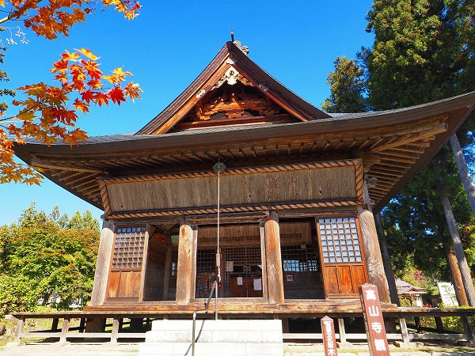
中を覗いてみる。
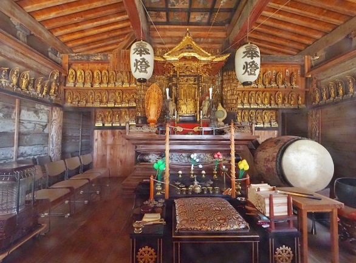
厨子を中心に三十三観音だろうか、沢山の仏像が並んでいる。
その厨子の裏側に見逃せないモノを発見した。
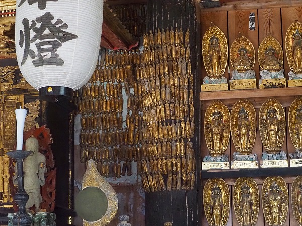
柱にびっしりと小仏が貼り付いているのである！
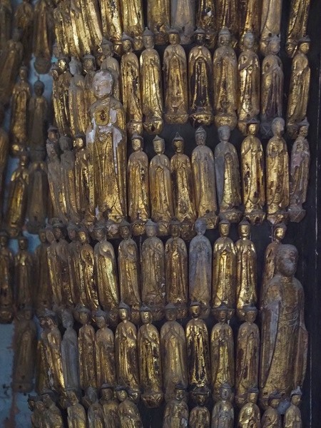
まるでバナナの房のようだ。
いや、大仏様とは全然関係ないんですけど貼り付き方があまりにも凄かったんで一応報告させていただきました。
さらに寄り道は続く。
この日は天気も機嫌も良かったので北アルプスがよく見える
アルプス展望広場という場所へ。
雪で白くなった北アルプスの山容はまさに壁のように延々と続いていた。
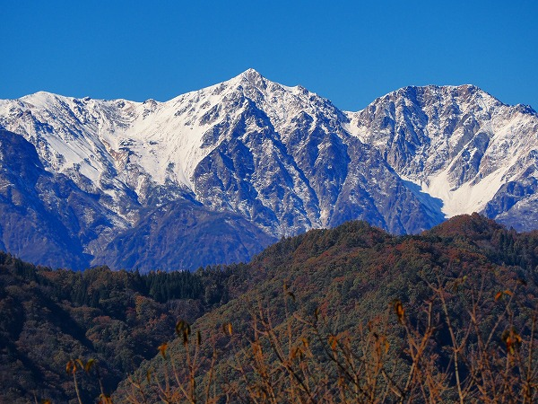
そんな広場の一画に小さなお堂が建っていた。
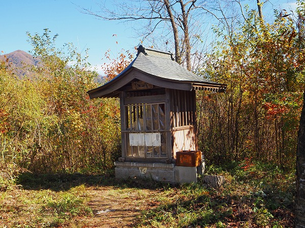
中を覗いてみてビックリ！
とんでもない姿の像が睨みをきかせているではないか。
子供を踏みつけ、髪を逆立て、腹からは馬が飛び出し、手にはスコップやギターを持っている。
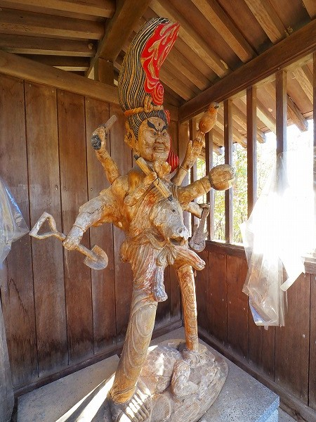
傍らにある説明書きによると「
ずくだせ明王」とある。
鬼無里村（現長野市）のタカハシさんという方が造ったという。
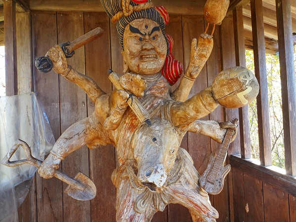
もしかして、これから訪れる大仏の作者と同一人物かと思ってビビったが、どうやら違う人のようである。
この辺りは独学で仏像を造っちゃう人が多いんだろうか？
ちなみに「ずくだせ」とは億劫がらずに自らを駆り立てようという意味だそうだ。
方言なのか作者の造語なのかは不明だ。
ギターは人を楽しませ、スコップは口だけでなく体を動かす象徴だそうです。
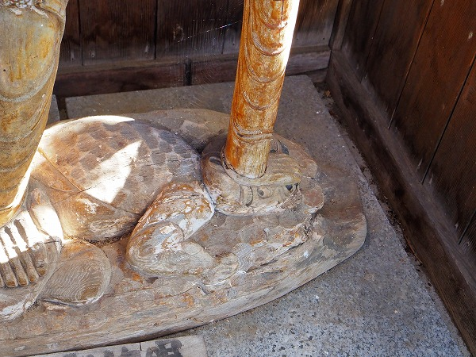
足元で踏まれている子供。
過疎小僧といい過疎からの脱却を象徴しているとか。
チョット可哀想だね。
ちなみにタカハシさんの作品は他にもあり、ここのずくだせ明王とずくだせ地蔵とずくだせ観音の三体でずくだせ3兄弟なのだとか。
こちらは
ずくだせ観音。
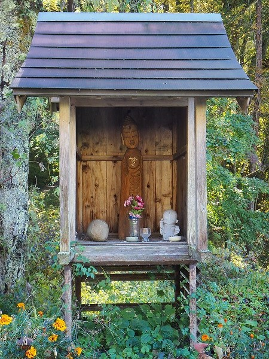
胸に「ずく」と書いてある。
ずくだせ地蔵は宿泊施設の中にあるらしいのだが、宿が留守だったので拝観は叶わなかった。
スミマセン。以上、大仏に関係ない（後にチョット関係することが判明するのだが）寄り道でした。
さてやっと本題に入りますよ。
大仏へと向かう山道を走っていると民家の中に四角い建物が見えてくる。
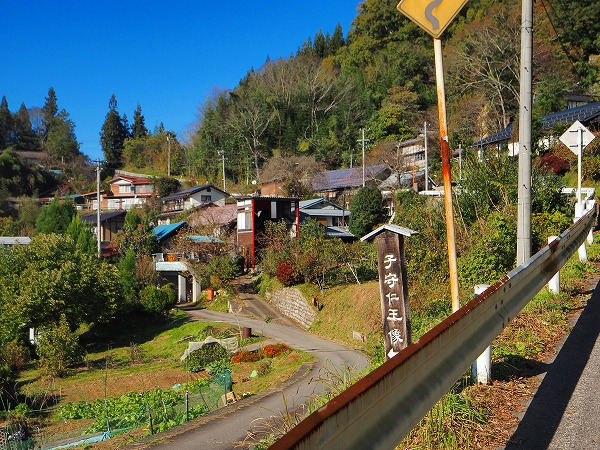
その中に大仏さんが納まっているのだ。
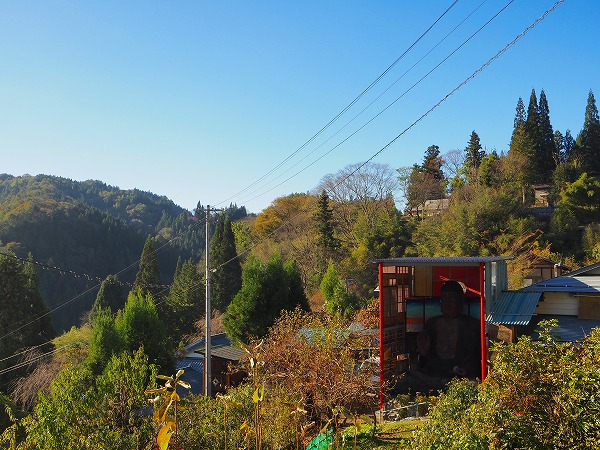
おおお、想像していたよりも5割増しで大きいぞ。
しかも結構な傾斜地にあるじゃないか。
ここ、多分大型のクレーンとか重機とか入れそうもないぞ。
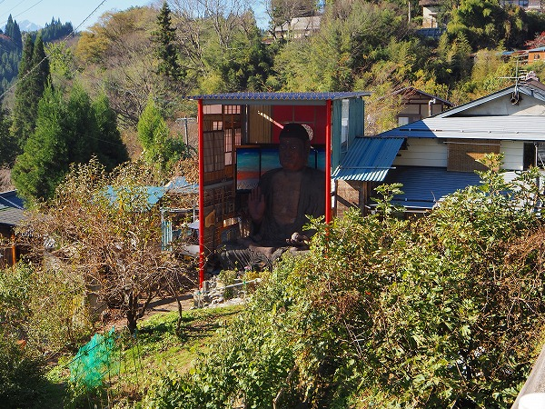
にしても長閑な山里と大仏のギャップよ。
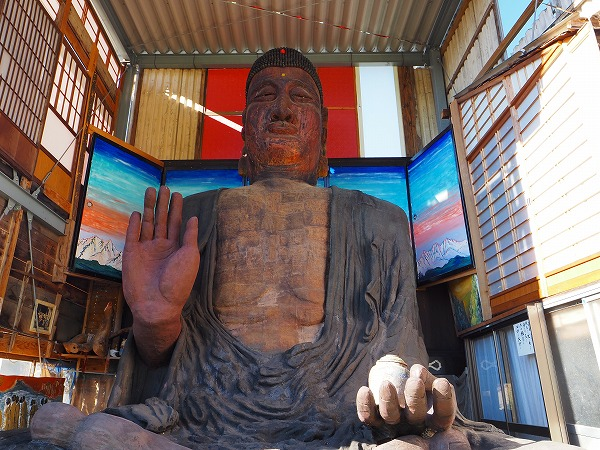
近づいて見てみる。
手に壺のようなものを持っているので
薬師如来であることが判る。
高さは5.4メートル。驚くほど大きい。
しばし呆然としていると敷地内に住んでいる作者の西沢さんがいらっしゃったので話を伺う。
大仏は2020年から4年かけて制作された。
農業を営んでいるので手の空いた時にコツコツと独りで造り続けたのだという。
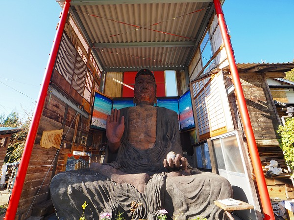
大仏を覆う建屋。
赤い鉄柱と屋根だけは建設業者に委託したが、壁面は建物の古材を利用しているという。
お金がないから、とは言うがこれがまた和室の中に大仏が座っているみたいで何とも味わい深い。
背後の襖に描かれた絵ももちろん西沢さんの作。
場所柄、朝焼けの北アルプスの姿なのだろう。
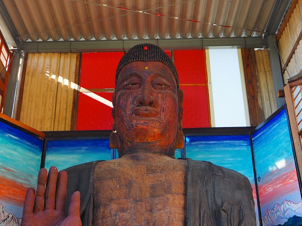
御尊顔。ユニークな顔だが一番苦労したという。
こんなに大きな像は造ったことがないので下から見た時のバランスや表情を試行錯誤して進めたとか。
顔の表面は着彩してあるようだ。鑿跡の荒々しさが造仏の苦労を物語っている。
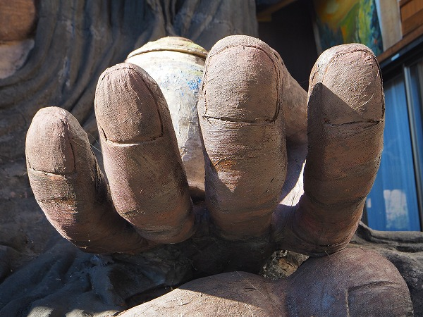
薬壺を持つ左手。
表面に麻布を張ってその上から塗装してあるようだ。
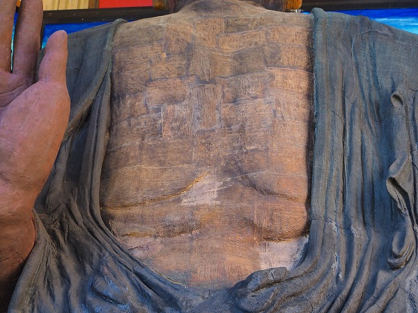
よく見ると顔以外の衣や胸元も同じように布が張られている。
これは奈良時代に造仏に用いられた脱活乾漆法を西沢流にアレンジしたものだという。
このように
独学で様々な技法を編み出し独自の大仏を生み出したのである。
一方、工程もかなり独特だ。
この大仏があった場所は元々養蚕小屋だったという。
その小屋の中でで台座から造りはじめて徐々に上へ上へと積み上げていく。
1階の天上をぶち抜き、更に上まで造っていく。
今度は2階の屋根を抜かないと頭が乗らないことが判明。
そこで建物を解体し、建屋を造ったのだという。
つまりかなり行き当たりばったりな作業工程だったようだ。
西沢さんに邸内を案内してもらう。
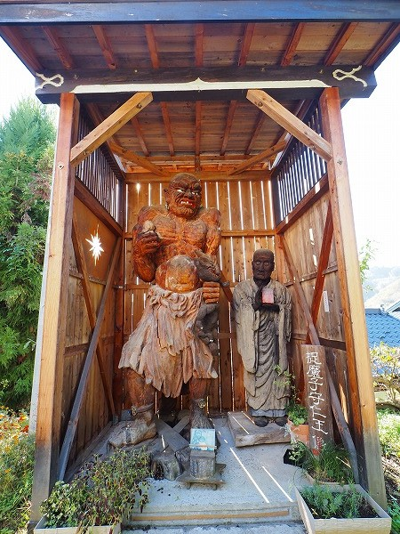
薬師像の隣にあった
仁王像。大さは3ｍほど。
仁王とはいえ1体しかいないのだが、その表情が恐ろしい迫力がある。
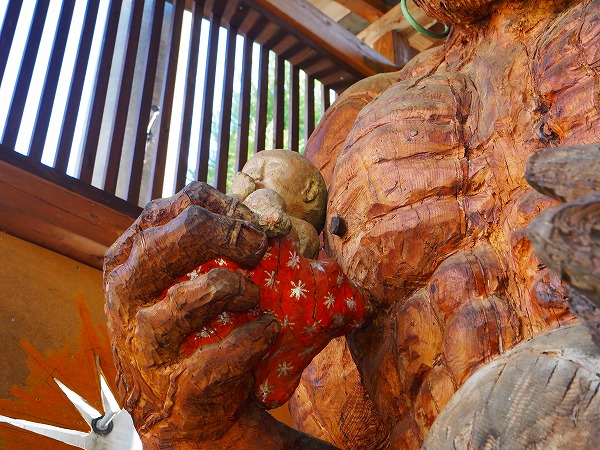
筋骨隆々の仁王は右手で子供を抱えている。
一方左手では悪魔を握りつぶしている。
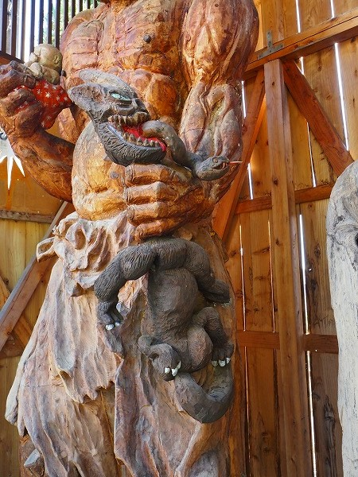
握りつぶされた悪魔は苦しさのあまり口から蛇が出ちゃってます。
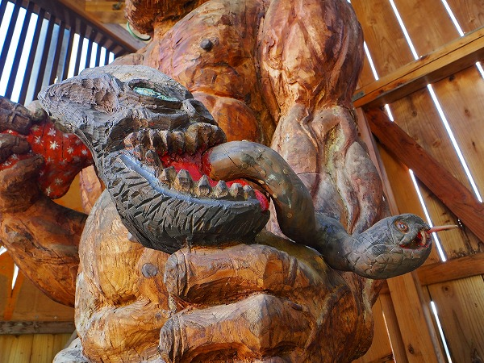
子供の虐待などのニュースに接して子供を悪から守る思いで造ったという。
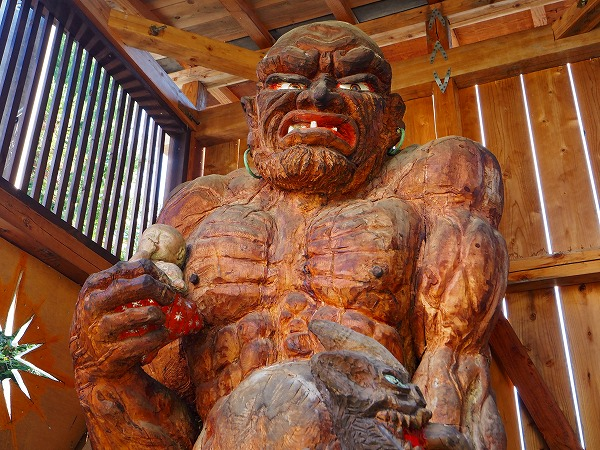
野生爆弾くっきーに似てるような。
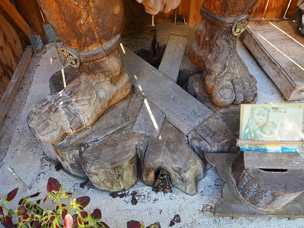
仁王像は巨大な栗の木から彫り出した
一木造りだという。
足元を見たら確かに切り株上の台座が足と繋がっていた。
かなり大きな木だったことが分かる。
仁王像の隣には僧侶の像。
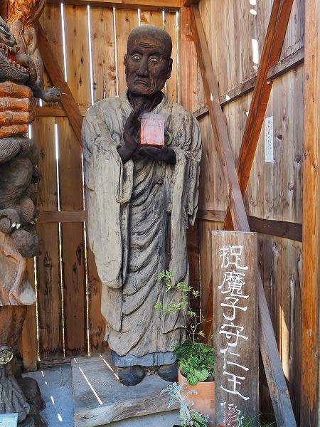
運慶の傑作、無着像の模刻だ。
口の辺りの表情はよく似ていると思う。
目の辺りは…チョット違いますかね…。
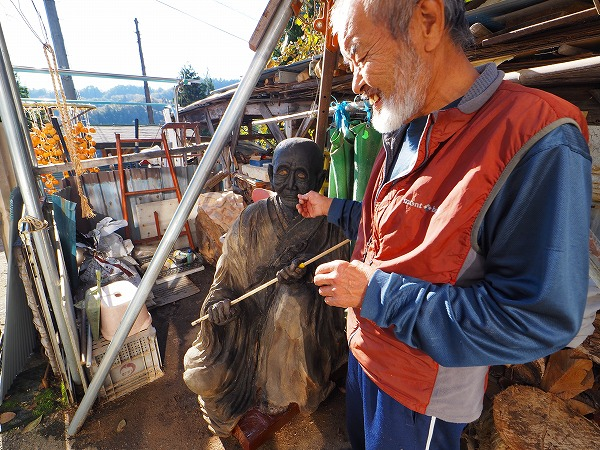
制作中の作品を見せてくれる西沢さん。
若い頃は登山家でもあったという。
彫刻は20年ほど前から始めたのだとか。きっかけは知り合いの造った仏像を見て興味が湧いたからだという。
独学だし、決して上手くはないとご自分でも仰っているが作品には
プロの仏師にはない独特な迫力が宿っている。
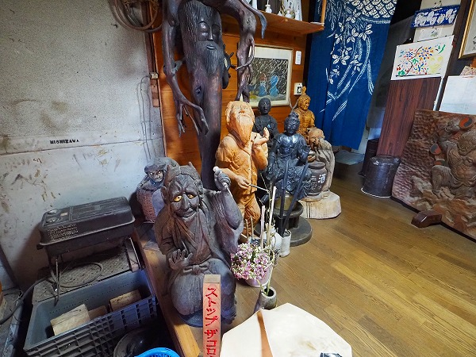
自宅内の作品も見せてもらった。今まで100体程の像を彫って来たという。その一部である。
西沢さんに疑問に思っていたことを聞いてみる。
先程の「ずくだせ明王」の事である。
作者のタカハシさんについて伺うと、何と
「仏像を彫るきっかけになった知り合い」というのがタカハシさんだったのだ。
ちなみに自宅内の作品群の内、一番奥にあった根っこが髪の毛になっている作品はタカハシさんのものだった。
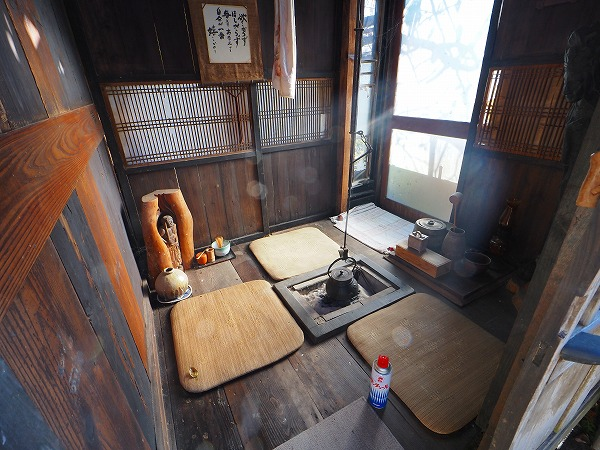
西沢さんは他にも茶室や露天風呂まで自分で造ってしまう人で、そのほとんどが住宅の廃材を利用している。
なんだかリアル「北の国から」みたいな生活である。
もしかしたら大仏はそんな西沢さんの生き方の集大成なのかも知れない。そんな気がしてきた
最後に、西沢さんが奉納したという仏像がと
臥雲院というお寺にあるというので寄ってみた。
曲がりくねった山道をひたすら上った先にある臥雲院は雲上の大伽藍という言葉がぴったりの立派なお寺だった。
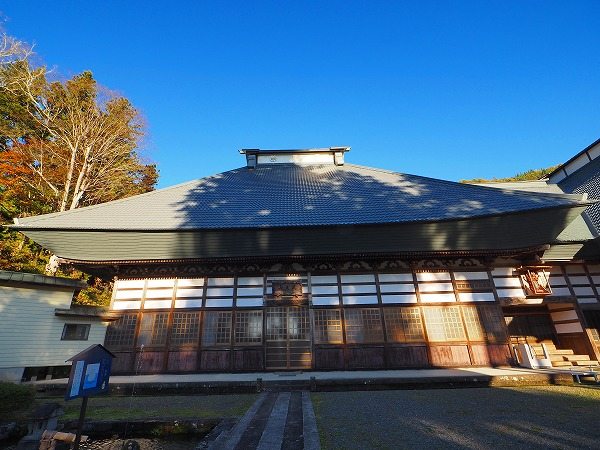
その本堂の脇の玄関の上に西沢さんの手による
馬頭観音が祀られていた。
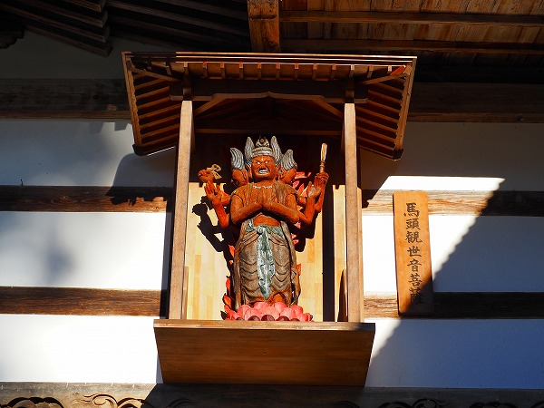
三面六臂の観音像は1ｍ程の大きさで彩色されている。
遠くからでもその憤怒の表情が見て取れる。
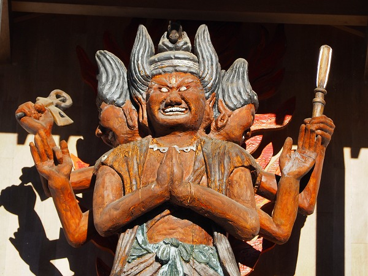
白目なのかと思ったがよく見たら象嵌が入っていた。
ただし、瞳の部分が白っぽいので白目のようなのだ。
左右の顔も怒りまくってて迫力がある。
こちらはトイレに安置された
烏枢沙摩明王。
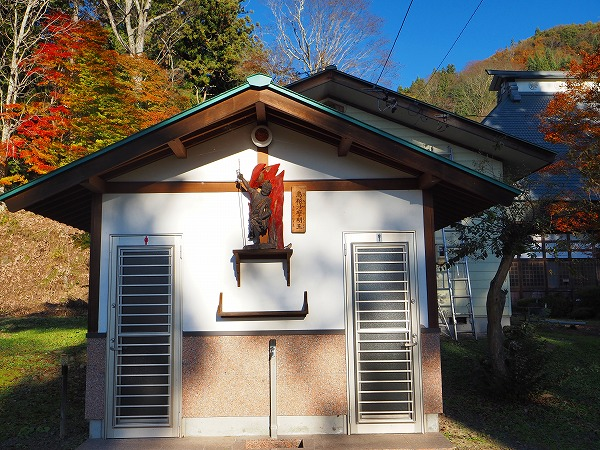
トイレの神様だ。
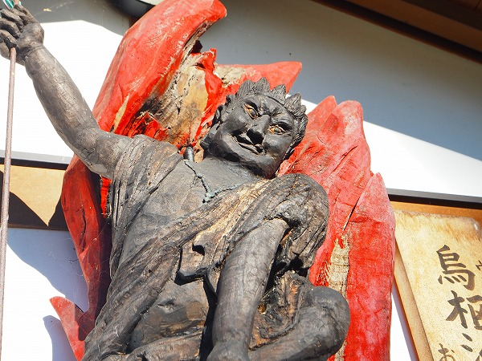
一方表情は相変わらずの大迫力。
思うに西沢さんの造る仏像はこの
憤怒の相が一番個性が良く表れていると思う。
薬師如来像のような穏やかな表情も良いが、やはり仁王や馬頭観音、烏枢沙摩明王のような怒りものの表情が圧倒的に印象に残った。
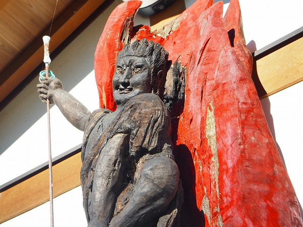
御年75才の西沢さん、これからも様々な仏像を生み出していくだろう。
長野の山奥で独り創作を続けていくその生き様は都会でコスパ、タイパばかり考えている現代人から見たら只々驚くばかりである。